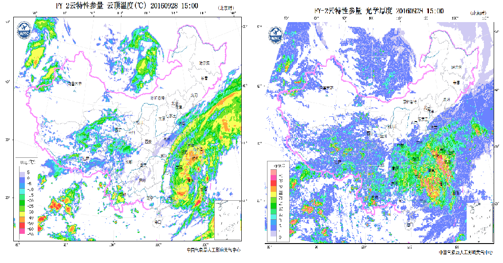
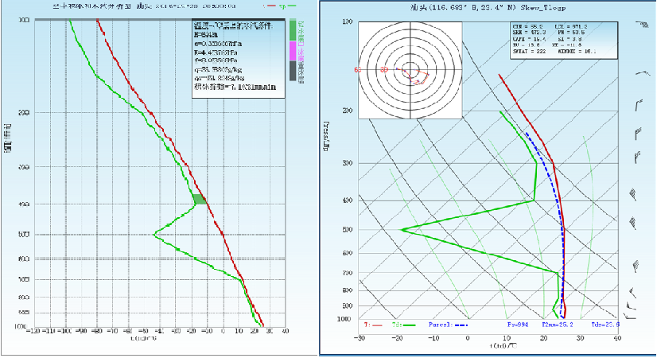
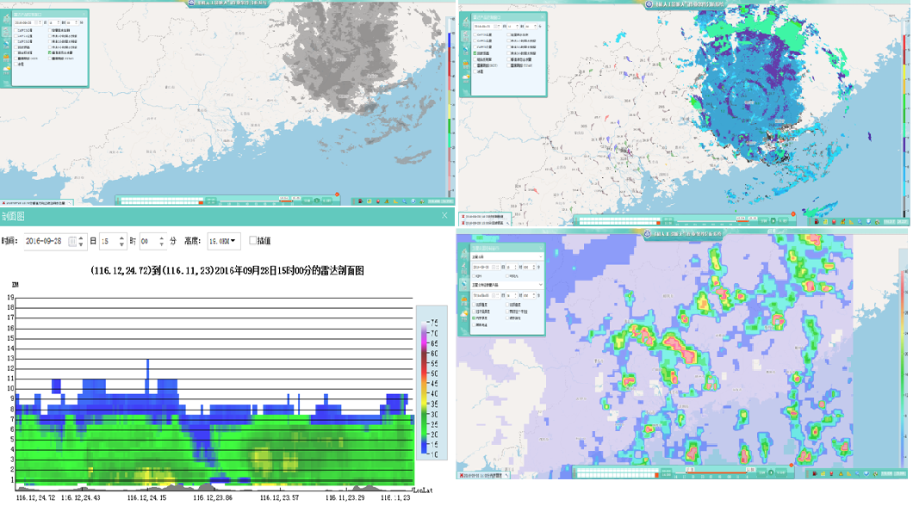
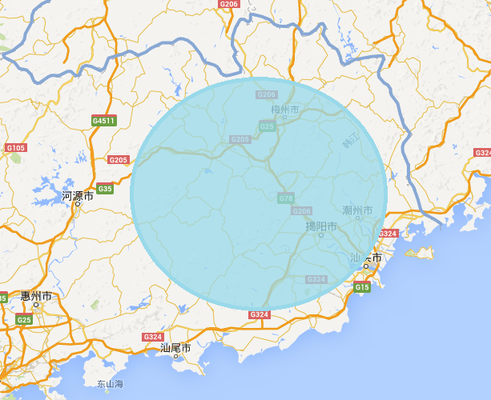

火箭作业条件预警报
201X年第 X期
广东省人工影响天气中心 201X年XX月XX日XX时
一、云系水平发展演变分析
FY2E卫星监测反演云产品分析表明，9月28日12时~15时，广东省东部被“鲶鱼”环流云系覆盖，云系自东向西移动，移速约为20km/h。15时卫星反演的云顶温度约-15℃~-60℃，光学厚度在8~40之间。云系水平分布不均匀，液水整体分布较为丰沛，峰值在梅州河源南部呈螺旋带状分布。根据云系的移向和移速，预计16~20时粤东大部仍有积层混合云覆盖影响。
图1 2016年9月28日15时卫星反演云顶温度和光学厚度
文字部分，保留模板，由值班人员根据实际情况修改。配图用卫星反演云产品。或葵花卫星产品
二、云垂直结构监测分析
根据28日时汕头探空产品和雷达产品，影响粤东的云系垂直发展密实，整层水汽含量较大，云顶高度约为11km，500pha为西北转西南气流，风速约17m/s。根据作业条件潜力预报结果，28日17时-20时的增雨潜力区位于梅州、汕头、河源、揭阳、潮州大部，过冷水主要位于4.0~6.5km（0~-20℃）。对该区域进行云降水垂直结构分析，卫星反演云顶较高，雷达回波约10~35dbz，地面有降水形成，有利于开展地面人工增雨作业。
 文字部分，保留模板，由值班人员根据实际情况修改。配图用micaps里的探空分析产品、雷达拼图、垂直液态水含量、雷达垂直剖面图、卫星反演云顶高度（或回波顶高）。
三、作业条件预警及作业建议
综合上述分析，预计9月28日16~20时，梅州、汕头、河源、揭阳、潮州等市有云系覆盖影响。结合17~20时增雨潜力区的预报结果和云系垂直结构分析，考虑对偏北方向的影响云系进行人工催化作业，作业目标区如图4所示，位于梅州、汕头、河源、揭阳、潮州各市，光学厚度较大，局部可达40，作业条件较好。
图4 作业目标区
文字部分，保留模板，由值班人员根据实际情况修改。作业目标区的配图可自由圈选。